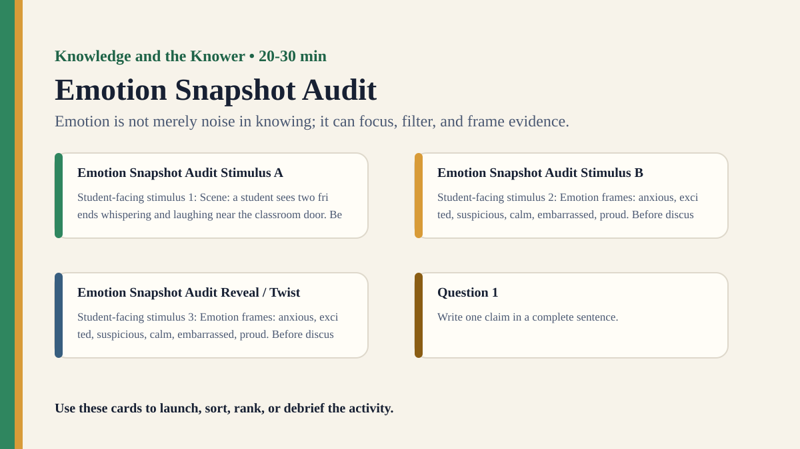

Premium draft resource
Emotion Snapshot Audit Classroom Run Kit
Students interpret the same ambiguous scene under different emotional states and compare how feeling directs attention.
Back to Emotion Snapshot Audit
One-Minute Teacher Brief
Students interpret the same ambiguous scene under different emotional states and compare how feeling directs attention.
Big idea: Emotion is not merely noise in knowing; it can focus, filter, and frame evidence.
Student Prompt
Inspect Emotion Snapshot Audit Stimulus A. Record one first claim, the evidence you used, your confidence, and what would make you revise.
Concrete Stimulus Packet
Stimulus
Emotion Snapshot Audit Stimulus A
Student-facing stimulus 1: Scene: a student sees two friends whispering and laughing near the classroom door. Before discussing, write what you noticed, what you inferred, and how confident you are.
Students inspect this exact card first and commit to a claim before hearing anyone else.Stimulus
Emotion Snapshot Audit Stimulus B
Student-facing stimulus 2: Emotion frames: anxious, excited, suspicious, calm, embarrassed, proud. Before discussing, write what you noticed, what you inferred, and how confident you are.
Use this for comparison, a second round, or a partner challenge.Stimulus
Emotion Snapshot Audit Reveal / Twist
Student-facing stimulus 3: Emotion frames: anxious, excited, suspicious, calm, embarrassed, proud. Before discussing, write what you noticed, what you inferred, and how confident you are.
Teacher reveal: connect the changed response to the big idea — Emotion is not merely noise in knowing; it can focus, filter, and frame evidence.Actual Lesson Questions
| # | Question for students | Teacher key / cue |
|---|---|---|
| 1 | After inspecting Emotion Snapshot Audit Stimulus A, what is your first knowledge claim? | Teacher cue: look for a clear claim, not just a description. |
| 2 | Which exact detail from Emotion Snapshot Audit Stimulus A did you use as evidence? | Teacher cue: students should name visible words, data, source features, method features, or contextual clues. |
| 3 | What did you infer beyond the evidence? | Teacher cue: this is where assumptions, framing, models, or perspective usually appear. |
| 4 | How confident are you: 50%, 60%, 70%, 80%, 90%, or 100%? | Teacher cue: confidence is data for the debrief, not a grade. |
| 5 | What missing information would most improve the knowledge claim? | Teacher cue: push for method, source, context, comparison, or definitions. |
| 6 | How does emotion shape what knowers notice? | Teacher cue: students should move from the classroom example to a general TOK issue. |
Student Task
Use the stimulus cards to complete the observation/inference/evidence/confidence grid, then answer one TOK knowledge question connected to Knowledge and the Knower.
Teacher Key / Reveal
The key move is not the “right answer”; it is the moment students see how emotion is not merely noise in knowing; it can focus, filter, and frame evidence.
- Strong response: separates observation from inference.
- Strong response: names a method, source, model, language choice, context, or perspective.
- Strong response: revises confidence when new evidence or a new criterion appears.
- Weak response: gives only opinion or says “it depends” without criteria.
Classroom materials
Printable Pack and Cards
Open the classroom resource pack for stimulus cards, CSV card deck, and the activity visual prompt.
Visual Prompt

Setup Checklist
- Use fictional emotion cards rather than asking students to disclose their actual mood.
- Choose an ambiguous image or short scene with several plausible interpretations.
Ready-to-Use Examples
- Scene: a student sees two friends whispering and laughing near the classroom door.
- Emotion frames: anxious, excited, suspicious, calm, embarrassed, proud.
Run Resources
- Emotion frame cards with noticing prompts.
- Interpretation grid: detail noticed, inference, emotion frame, evidence strength.
Teacher Language
- Emotion did not add new visual evidence, but it changed which details mattered.
- When might emotion help you notice something important?
Sample Student Output
- The suspicious frame made the whispering seem hostile, while the excited frame made it seem like a surprise.
- The same detail supported different interpretations because the emotional frame changed.
Procedure
- Show students the same ambiguous stimulus without discussion.
- Assign groups different emotion frame cards.
- Groups list what details they notice, what they infer, and what they ignore.
- Compare interpretations across emotion frames.
- Debrief emotion as evidence, filter, and interpretive context.
Debrief Questions
- Knowledge question: How does emotion shape what knowers notice?
- Can emotion improve knowledge by making some evidence salient?
- When does emotional interpretation become distortion?
Adaptations
- Support: use two emotion frames only.
- Challenge: ask students to identify when emotion provides relevant evidence.
Extension Tasks
- Students compare emotion in eyewitness testimony, art interpretation, and ethical judgement.
- Create a checking routine for emotionally charged knowledge claims.